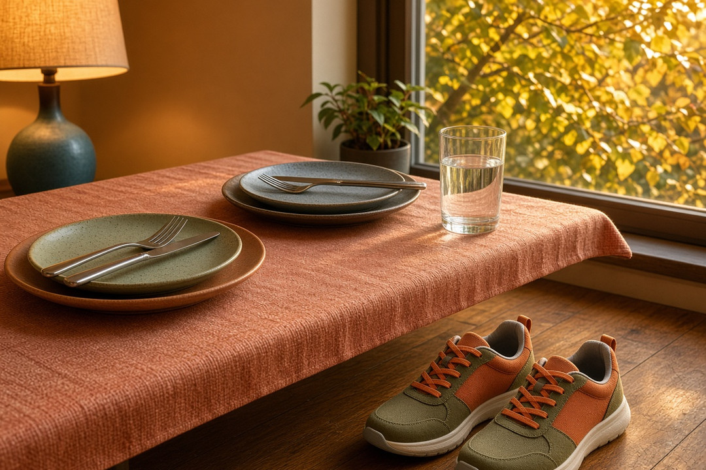
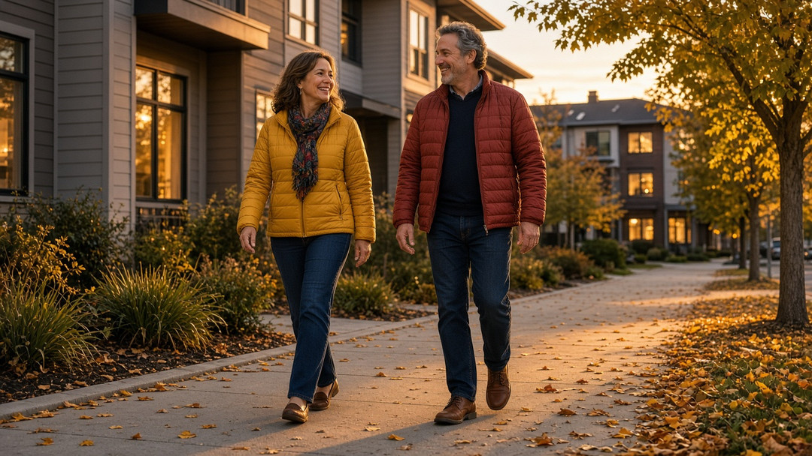
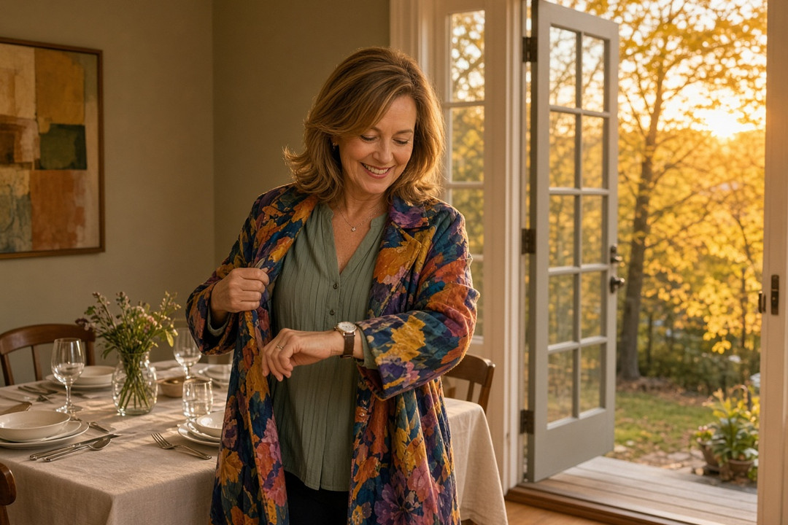
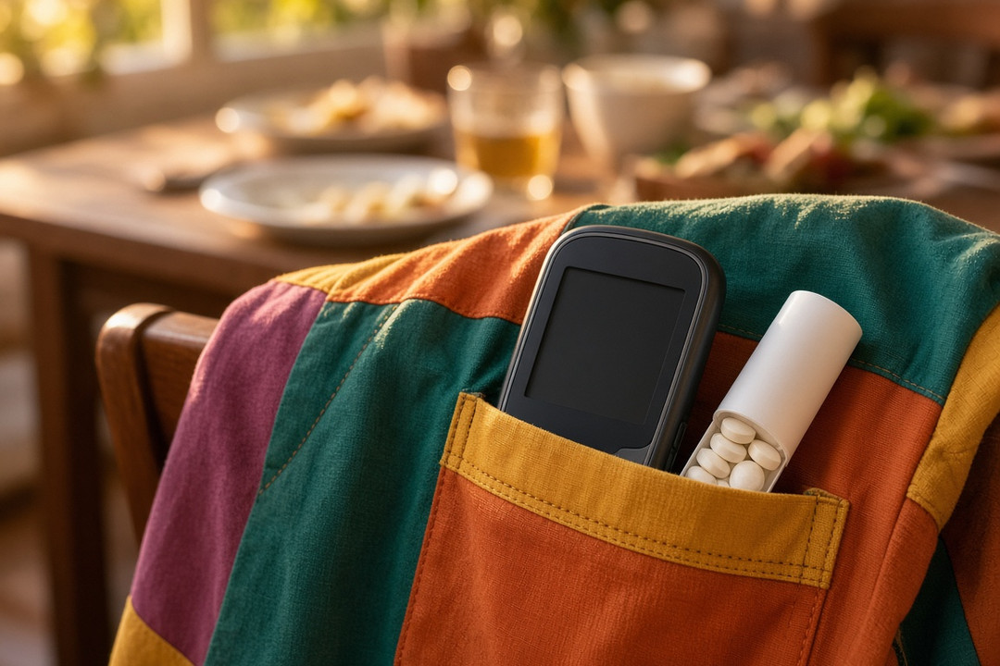
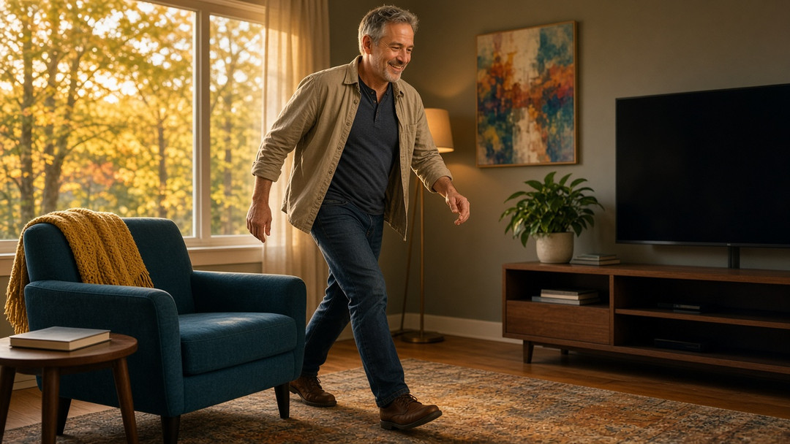

Po 50. roku życia często słyszy się, że po jedzeniu trzeba iść na spacer, bo cukier spadnie. Jak naprawdę jest ze spacerem po jedzeniu a cukrem? Krótki, spokojny marsz po posiłku nie jest treningiem ani tym samym co 10 000 kroków dziennie. W badaniach u osób około 60. roku życia łagodził wzrost cukru po jedzeniu. Nie ma jednak jednego właściwego czasu dla każdego. Przy insulinie albo pochodnych sulfonylomocznika najpierw porozmawiaj z lekarzem. Ten tekst nie zastępuje leczenia ani indywidualnej porady.
Szybka odpowiedź
Krótki, spokojny spacer po jedzeniu może łagodzić wzrost cukru, ale nie ma jednej liczby minut dla każdego. W badaniach u osób około 60 lat testowano między innymi 10 minut zaraz po posiłku i 15 minut pół godziny po jedzeniu. Jeśli bierzesz insulinę albo pochodne sulfonylomocznika, zmierz cukier i nie zmieniaj dawek samodzielnie; ten poradnik nie zastępuje leczenia.
Kluczowe wnioski
- Krótki spacer po posiłku może zmniejszyć wzrost cukru, ale protokoły w badaniach się różnią i nie ma jednego „właściwego” czasu.
- Spadek o 12% i 22% w badaniu Reynoldsa dotyczy pola pod krzywą wzrostu cukru, nie tego, że cukier zawsze spada o tyle u każdego.
- Przy insulinie lub pochodnych sulfonylomocznika ryzyko niedocukrzenia jest realne; bez tych leków według PTD 2026 jest bardzo małe.
- Przerwy w długim siedzeniu to co innego niż spacer tuż po posiłku; po 60. roku życia już 6000–8000 kroków dziennie wiąże się z mniejszą śmiertelnością.
Czym jest krótki spacer po jedzeniu i czym nie jest
Krótki spacer po jedzeniu to spokojny marsz po posiłku, a nie trening siłowy ani to samo co 10 000 kroków dziennie. Może łagodzić poposiłkowy wzrost cukru, ale w badaniach testowano różne czasy i różne momenty startu. Nie ma więc jednej minuty, która „zawsze działa” u każdego po pięćdziesiątce.
Mięśnie podczas chodzenia zużywają glukozę, dlatego cukier we krwi po posiłku może rosnąć łagodniej. To nadal tylko wsparcie. Spacer nie zastępuje leków, diety ani zaleceń lekarza albo edukatora diabetologicznego.

Co wykazały badania u osób około 60. roku życia?
U osób około 60. roku życia kilka badań pokazało, że ruch po posiłku może złagodzić wzrost cukru. Każde badanie miało jednak inny protokół, inną grupę i inną miarę efektu. Dlatego w tabeli widać osobno, kto chodził, kiedy zaczynał i co naprawdę zmierzono.
| Badanie | Kto | Start | Czas | Co zmierzono | Wynik | Siła |
|---|---|---|---|---|---|---|
| Reynolds 2016 | 41 osób z cukrzycą typu 2, średnio 60 lat, życie codzienne | w ciągu 5 min po posiłku | 10 min po każdym z 3 posiłków, 2 tygodnie | wzrost cukru w 3 h (pole pod krzywą, czujnik ciągłego pomiaru cukru (CGM)) | o 12% mniejsze pole niż przy 30 min raz dziennie; po kolacji o 22% | umiarkowana |
| DiPietro 2013 | 10 osób w wieku 60 lat i więcej, stan przedcukrzycowy, bez leków, laboratorium | ok. 30 min po posiłku | 15 min po każdym posiłku, bieżnia | średni cukier z całej doby | 129 mg/dl w dzień kontroli, 116 mg/dl w dzień marszu | słaba (małe badanie, 10 osób) |
| Engeroff 2023 (metaanaliza) | 8 badań, 116 osób, w tym 47 z cukrzycą typu 2 | różnie | różnie | wzrost cukru po posiłku | ruch po posiłku działał lepiej niż przed posiłkiem; wcześniej znaczyło lepiej; wysokie ryzyko błędu | umiarkowana do słabej |
| Buffey 2022 (metaanaliza) | 7 badań jednodniowych, głównie osoby z nadwagą | przerwy w siedzeniu, nie spacer „po talerzu” | m.in. 2 min co 20 min albo 5 min co 30 min | cukier po posiłku | lekki marsz działał lepiej niż samo wstanie, a wstanie lepiej niż ciągłe siedzenie | umiarkowana, ale nie wprost o spacerze po posiłku |
W badaniu z Nowej Zelandii 41 osób z cukrzycą typu 2, średnio w wieku 60 lat, przez dwa tygodnie chodziło 10 minut po każdym głównym posiłku, startując w ciągu pięciu minut po jedzeniu. Wzrost cukru po posiłku, liczony jako pole pod krzywą w ciągu trzech godzin (to miara, która łączy, jak wysoko i jak długo cukier był podniesiony), był średnio o 12% mniejszy niż wtedy, gdy te same osoby chodziły raz dziennie przez 30 minut, a po kolacji o 22% mniejszy. Średni cukier w trzech godzinach po kolacji był niższy o 0,5 mmol/l, czyli około 9 mg/dl. To nie znaczy, że cukier „spada o 12% u każdego”. Badanie trwało krótko i nie pokazało, czy poprawia się długoterminowe wyrównanie, na przykład HbA1c. W tygodniach ze spacerami po posiłkach te same osoby ruszały się w sumie trochę więcej, więc nie chodziło wyłącznie o porę marszu. Wśród uczestników były też osoby na insulinie z metforminą, ale autorzy nie podali, czy ktoś miał niedocukrzenie. Nie wiadomo więc, czy u tych osób spacery powodowały niedocukrzenia.
W małym badaniu z udziałem 10 osób po sześćdziesiątce ze stanem przedcukrzycowym, bez leków obniżających cukier, trzy 15-minutowe marsze na bieżni pół godziny po posiłkach obniżyły średni cukier z całej doby podobnie jak jeden 45-minutowy marsz i wyraźniej obniżyły cukier po kolacji. To tylko 10 osób w laboratorium, więc wynik jest wskazówką, nie dowodem dla wszystkich po 50. roku życia i nie dla osób na insulinie.
Zestawienie ośmiu badań (Engeroff, 2023) objęło 116 osób, w tym 47 z cukrzycą typu 2. Ruch po posiłku zmniejszał wzrost cukru bardziej niż ruch przed jedzeniem i bardziej niż brak ruchu. Im wcześniej po posiłku zaczynano, tym lepiej. We wszystkich tych badaniach ryzyko błędu oceniono jako wysokie, a próby były małe, więc wiadomo raczej, w którą stronę to działa, niż ile da u konkretnej osoby.

Minuty i moment startu: badania nie dają jednej liczby
Badania nie wskazują jednego właściwego momentu startu ani jednej liczby minut dla każdego. W jednym protokole ludzie ruszali się w ciągu pięciu minut po skończeniu posiłku i chodzili 10 minut. W innym zaczynali pół godziny później i chodzili 15 minut. Zestawienie Engeroffa sugeruje raczej, że im wcześniej po posiłku, tym lepiej, ale przy wysokim ryzyku błędu. Przedziały w stylu „zacznij 15–30 minut po jedzeniu, chodź 10–15 minut”, które pojawiają się w odpowiedziach internetowych, nie mają oparcia w konkretnym badaniu.
U osób bez cukrzycy cukier po jedzeniu jest najwyższy zwykle po około 45–60 minutach od rozpoczęcia posiłku. U osób z cukrzycą szczyt przychodzi często nieco później, zwykle w ciągu 1–2 godzin od początku jedzenia. Dużo zależy od tego, co i ile zjemy. Dla zdrowych osób po pięćdziesiątce dobrych pomiarów czasu szczytu brak: jedno często cytowane badanie z czujnikiem ciągłego pomiaru cukru dotyczyło młodych dorosłych, średnio 27 lat.
Jeśli chcesz spróbować, wybierz spokojne tempo, w którym możesz rozmawiać. Nie trzeba zakładać stroju sportowego ani planować kilometrów. Intensywny trening tuż po obfitym posiłku to już inna sprawa niż krótki marsz.
Jeśli masz zgagę albo refluks, lepiej nie kłaść się na płasko przez 2–3 godziny po większym posiłku. Spokojny spacer albo siedzenie w pozycji wyprostowanej jest zwykle lepszym wyborem, choć dowody na ten temat są słabe i dotyczą głównie osób z refluksem, a nie każdej drzemki po obiedzie.

Dla kogo te wyniki mają znaczenie po pięćdziesiątce
Najmocniejsze dane o spacerze po posiłku pochodzą od osób około 60. roku życia, a nie od wszystkich po pięćdziesiątce. W badaniu Reynoldsa uczestnicy mieli cukrzycę typu 2 i średnio 60 lat. W badaniu DiPietro było 10 nieaktywnych osób w wieku 60 lat i więcej, ze stanem przedcukrzycowym i bez leków obniżających cukier. Wyników tego małego badania nie można po prostu przenieść na osoby 50–59 lat ani na osoby leczone insuliną.
Polskie Towarzystwo Diabetologiczne w zaleceniach na 2026 rok nie każe wprost chodzić „po talerzu”. Radzi natomiast, by wysiłek był regularny, najlepiej codzienny, i żeby nie siedzieć bez przerwy dłużej niż 30 minut. U osób z cukrzycą typu 2 po 65. roku życia albo z nadwagą za najbardziej odpowiednią formę uznaje szybki spacer, aż do lekkiej zadyszki, trzy do pięciu razy w tygodniu, około 150 minut łącznie. To zalecenie ogólnej aktywności, nie protokół po posiłku. To inny, szybszy marsz niż spokojny spacer po posiłku.
Nowe w zaleceniach PTD 2026 jest też zdanie o krokach. Po 60. roku życia już 6000–8000 kroków dziennie wiąże się z mniejszą śmiertelnością. 10 000 kroków pozostaje celem dla osób bardziej aktywnych. Zwiększenie ruchu nawet do 300 minut tygodniowo może dać dodatkowe korzyści.
Insulina, tabletki i stopy: kiedy spacer wymaga ostrożności
Jeśli bierzesz insulinę albo tabletki z grupy pochodnych sulfonylomocznika, nawet spokojny spacer może obniżyć cukier za bardzo. Zanim zaczniesz regularnie chodzić po posiłkach, porozmawiaj o tym z lekarzem albo edukatorem diabetologicznym. Nie zmieniaj dawek leków na własną rękę. Zapytaj lekarza albo farmaceutę, czy Twój lek należy do pochodnych sulfonylomocznika, jeśli nie masz pewności.
Na początku sprawdzaj cukier przed spacerem i po nim. Miej przy sobie glukozę, na przykład tabletki albo żel. W zaleceniach PTD 2026 pierwszym wyborem przy niedocukrzeniu jest właśnie glukoza. Przy cukrze 70 mg/dl albo niższym albo przy objawach niedocukrzenia (np. drżenie rąk, poty, nagły głód, kołatanie serca, zawroty głowy, dezorientacja) przerwij spacer i zjedz 15 g glukozy. Na opakowaniu tabletek sprawdź, ile sztuk to 15 g. Po 15 minutach zmierz cukier jeszcze raz. Niedocukrzenie może pojawić się także kilka godzin po ruchu, czasem nawet do doby.
Jeśli nie bierzesz insuliny ani pochodnych sulfonylomocznika, ryzyko niedocukrzenia po spacerze jest według Polskiego Towarzystwa Diabetologicznego bardzo małe. Możesz więc spokojnie spróbować.
Jeśli masz cukrzycę, a zwłaszcza słabsze czucie w stopach, chodź w wygodnych, dobrze dopasowanych butach, nie boso i nie w klapkach. Codziennie oglądaj stopy, także od spodu, na przykład w lusterku. Gdy zauważysz ranę, pęcherz, zaczerwienienie albo obrzęk, nie idź na spacer, tylko skontaktuj się z lekarzem. Po wygojeniu umiarkowany marsz w odpowiednich butach może nie zwiększać ryzyka kolejnych owrzodzeń, ale tę decyzję lepiej podjąć z lekarzem. Takie zasady są w zaleceniach ADA 2026 i, krócej, w PTD 2026.

Przerwy w siedzeniu to nie to samo co spacer po talerzu
Częste, krótkie przerwy w długim siedzeniu to nie to samo co spacer zaraz po talerzu. Zestawienie siedmiu badań laboratoryjnych (Buffey, 2022) pokazało, że krótki, lekki marsz w trakcie długiego siedzenia zmniejsza wzrost cukru po jedzeniu, a marsz działa lepiej niż samo wstanie. Badania trwały jeden dzień, wyniki bardzo się różniły, a autorzy wskazali możliwe obciążenie publikacją. Nie wynika z tego, ile dokładnie da jeden 10-minutowy spacer po obiedzie.
Amerykańskie zalecenia ADA 2026 radzą przerywać długotrwałe siedzenie co najmniej co 30 minut, między innymi ze względu na cukier. Polskie Towarzystwo Diabetologiczne mówi to samo innymi słowy: nie siedzieć bez przerwy dłużej niż 30 minut. Jak często wstawać i jak to wpleść w dzień, dokładniej opisujemy w osobnym tekście o siedzeniu po 50. roku życia. Tu wystarczy zapamiętać, że wstać od biurka albo od fotela to dobry nawyk, ale inny niż krótki spacer po śniadaniu, obiedzie albo kolacji.

Najczęściej zadawane pytania
Czy spacer po jedzeniu jest dobry?
Dla wielu osób po pięćdziesiątce krótki, spokojny spacer po posiłku może być dobrym nawykiem, bo w badaniach u osób około 60. roku życia łagodził wzrost cukru po jedzeniu. Nie jest jednak dobry „zawsze i u każdego”: przy insulinie albo pochodnych sulfonylomocznika trzeba najpierw porozmawiać z lekarzem, a przy ranie lub owrzodzeniu stopy nie obciążać stopy.
Kiedy spacer po jedzeniu?
Nie ma jednej właściwej minuty. W badaniu Reynoldsa osoby z cukrzycą typu 2 zaczynały w ciągu pięciu minut po skończeniu posiłku i chodziły 10 minut. W małym badaniu DiPietro start był 30 minut po posiłku, a marsz trwał 15 minut. Zestawienie Engeroffa sugeruje, że wcześniej po jedzeniu bywa korzystniej, ale ryzyko błędu w tych badaniach jest wysokie.
Co daje spacer po jedzeniu?
Może złagodzić poposiłkowy wzrost cukru, bo pracujące mięśnie zużywają glukozę. W badaniu Reynoldsa mniejsze było pole pod krzywą wzrostu cukru, zwłaszcza po kolacji, a nie „cukier spadł o stały procent u każdego”. Krótki spacer nie jest tym samym co trening albo 10 000 kroków dziennie i nie zastępuje leków.
Czy spacer po obiedzie to dobry pomysł?
Może być, jeśli jest spokojny i dopasowany do Ciebie. W badaniu Reynoldsa efekt był największy po kolacji, czyli po posiłku, przy którym uczestnicy jedli najwięcej węglowodanów i potem najwięcej siedzieli. Przy insulinie albo pochodnych sulfonylomocznika najpierw zapytaj lekarza. Przy zgadze lepiej nie kłaść się od razu na płasko po większym posiłku.
Czy po jedzeniu można iść na spacer?
Tak, spokojny marsz można zacząć nawet wkrótce po posiłku. W jednym badaniu start był w ciągu pięciu minut po jedzeniu. To nie to samo co intensywny trening tuż po obfitym obiedzie. Jeśli bierzesz insulinę albo pochodne sulfonylomocznika, zmierz cukier i nie zmieniaj dawek samodzielnie.
Czy spacer zbija cukier?
Może łagodzić wzrost cukru po jedzeniu, ale nie ma gwarancji, że „zbije” go o określoną wartość u każdego. W badaniu Reynoldsa o 12% i 22% mniejsze było pole pod krzywą wzrostu, a nie sam poziom cukru.
Czy po spacerze wzrasta cukier?
Po spokojnym spacerze cukier zwykle rośnie łagodniej, a nie bardziej. Chwilowo podnieść cukier może raczej bardzo intensywny wysiłek, na przykład sprint czy dźwiganie dużych ciężarów, a nie spokojny marsz. Pamiętaj, że cukier i tak rośnie po samym jedzeniu. U osób na insulinie albo pochodnych sulfonylomocznika większym ryzykiem jest niedocukrzenie, także kilka godzin później, a nie typowy skok cukru przez sam spacer.
Źródła
- Reynolds i in. (Diabetologia, 17.10.2016, PMID 27747394): RCT krzyżowe, 41 osób z cukrzycą typu 2, średnio 60 lat; 10 min chodu po każdym głównym posiłku (start w ciągu 5 min) vs 30 min raz dziennie, 2 tygodnie. iAUC w 3 h niższe o 12% (po kolacji 22%); średni cukier po kolacji −0,50 mmol/l. Brak raportu hipoglikemii. PubMed HTML 15.11.2026: HTTP 203 (wyzwanie), treść z pełnego tekstu Springera.
- DiPietro i in. (Diabetes Care, 2013, PMID 23761134, PMC3781561): małe badanie, n=10, osoby ≥60 lat (średnio 69 lat) ze stanem przedcukrzycowym, bez leków obniżających cukier; 15 min chodu na bieżni (3 MET) 30 min po posiłku vs 45 min rano lub po południu. Średni cukier doby 129 vs 116 mg/dl. Pełny tekst PMC/WebFetch 15.11.2026.
- Buffey i in. (Sports Med, 11.02.2022, PMID 35147898, PMC9325803): metaanaliza 7 jednodniowych badań krzyżowych o przerywaniu siedzenia, nie o spacerze tuż po talerzu. Lekki marsz vs siedzenie: ∆ = −0,72 (95% CI −1,03 do −0,41). Możliwe obciążenie publikacją i duża niejednorodność (I² ok. 94%).
- Engeroff, Groneberg i Wilke (Sports Med, 2023, PMID 36715875, PMC10036272): przegląd z metaanalizą 8 RCT krzyżowych, 116 osób, w tym 47 z cukrzycą typu 2. Ruch po posiłku zmniejszał wzrost cukru bardziej niż ruch przed posiłkiem (SMD 0,47) i bardziej niż brak ruchu (SMD 0,55); im wcześniej po posiłku, tym lepiej (p=0,001). We wszystkich badaniach wysokie ryzyko błędu. PROSPERO CRD42022324070.
- ADA. 5. Facilitating Positive Health Behaviors… Standards of Care in Diabetes—2026. Diabetes Care 2026;49(Suppl. 1):S89–S131. DOI 10.2337/dc26-S005, PMID 41358898. Zalecenie 5.34: przerywać długotrwałe siedzenie co najmniej co 30 min ze względu na glukozę i inne korzyści (C). Neuropatia obwodowa: umiarkowany chód może nie zwiększać ryzyka owrzodzeń przy właściwym obuwiu; codzienne oglądanie stóp; przy ranie tylko ćwiczenia bez obciążania stopy.
- ADA. 6. Glycemic Goals, Hypoglycemia, and Hyperglycemic Crises: Standards of Care in Diabetes—2026. Diabetes Care 2026;49(Suppl. 1):S132–S149. DOI 10.2337/dc26-S006, PMID 41358894. Tabela 6.3: pomiar poposiłkowy 1–2 h od początku posiłku, zwykle czas szczytu u osób z cukrzycą. Zalecenie: glukoza jako pierwszy wybór przy cukrze poniżej 70 mg/dl, powtórka po 15 min.
- ADA. 12. Retinopathy, Neuropathy, and Foot Care: Standards of Care in Diabetes—2026. Diabetes Care 2026;49(Suppl. 1):S261. DOI 10.2337/dc26-S012, PMID 41358886. Zalecenia 12.30–12.31: codzienne oglądanie stóp; specjalistyczne obuwie przy wysokim ryzyku owrzodzeń. W tekście: nie chodzić boso, unikać butów z otwartymi palcami, dobrze dopasowane buty do chodzenia.
- ADA. Postprandial Blood Glucose (konsensus). Diabetes Care 2001;24:775–778. DOI 10.2337/diacare.24.4.775, PMID 11315848. U osób zdrowych cukier zaczyna rosnąć ok. 10 min po rozpoczęciu jedzenia, szczyt ok. 60 min od początku posiłku. Większość panelu deklarowała honoraria lub granty od firm sponsorujących konferencję (m.in. Lilly, Novo Nordisk, Novartis) — konflikt interesów.
- Freckmann i in. (J Diabetes Sci Technol, 2007, PMID 19885137, PMC2769652): CGM u 24 zdrowych osób, średnio 27 lat (to nie są osoby 50+). Średni czas do szczytu cukru po posiłku 46–50 min.
- Daenen i in. (Diabetes Metab, 2010, PMID 20226708): CGM, 69 zapisów u osób leczonych insuliną (typ 1 i 2). Średni czas do szczytu 72 ± 23 min, u 80% przed 90 min, duży rozrzut. Brak PMC; abstrakt PubMed.
- Polskie Towarzystwo Diabetologiczne. Zalecenia kliniczne dotyczące postępowania u osób z cukrzycą – 2026. Curr Top Diabetes 2026;6(1), PDF z 4.02.2026. Rozdz. 6–7 i 15: wysiłek częścią leczenia; nie siedzieć bez przerwy dłużej niż 30 min [B]; bardzo małe ryzyko hipoglikemii bez insuliny i pochodnych sulfonylomocznika; 6000–8000 kroków dziennie po 60. roku życia wiąże się z mniejszą śmiertelnością; glukoza pierwszym wyborem przy niedocukrzeniu (≤70 mg/dl, 15 g, kontrola po 15 min). Brak osobnego zalecenia „spacer po posiłku”. Host ptdiab.pl poza listą silnych domen. HTTP 200 dnia 15.11.2026.
- Katz i in. ACG Clinical Guideline for the Diagnosis and Management of Gastroesophageal Reflux Disease. Am J Gastroenterol 2022;117:27–56. DOI 10.14309/ajg.0000000000001538, PMID 34807007, PMC8754510. Warunkowe zalecenie o niskim poziomie dowodów: unikać posiłków na 2–3 godziny przed snem; krótki odstęp przed leżeniem na wznak wiąże się z większymi objawami refluksu.
- NHS. Low blood sugar (hypoglycaemia). Page last reviewed: 03 August 2023 (następny przegląd podany na stronie: 03 August 2026). Objawy m.in.: głód, zawroty głowy, poty, drżenie, kołatanie serca, dezorientacja. HTTP 200 dnia 15.11.2026. Progu 4 mmol/l z tej strony nie przenosimy do artykułu; polski próg leczenia to ≤70 mg/dl (PTD 2026, ADA 2026).
Uwaga: Artykuł ma charakter informacyjny i edukacyjny. Nie zastępuje konsultacji lekarskiej, diagnozy ani leczenia.